Python的shell和系统的终端
然后总结关于 系统终端 和 Python shell的内容。
希望看完后，小白新手能搞清楚：
- Python shell 不是 系统终端
以及相关的概念和逻辑：
- 什么是 系统的终端中运行Python shell
- 不能在系统中的终端中运行Python代码
- 应该在Python shell中运行Python代码
- 不能在Python shell中运行系统命令
- 应该在系统终端中运行系统命令
什么是Python的shell
- Python的shell
- 是什么：交互式的，一个命令行的界面
- 干什么：
- 供你输入代码，测试代码用的
- 你所输入的代码，往往是很少的代码片段
- 比如：一行或几行的Python代码
- -》很少有一次性输入很多很多行的Python代码
- 对于多行的、非常多的、大型的的Python代码，则往往保存到独立的（后缀是.py的）Python文件中，再去用专业的开发工具去测试和运行
- 比如PyCharm或VSCode等Python的编辑器或IDE
- 对于多行的、非常多的、大型的的Python代码，则往往保存到独立的（后缀是.py的）Python文件中，再去用专业的开发工具去测试和运行
- 所以：往往第三方其他的库，才用Python的shell去演示基本的用法
- 比如：你这里的人工智能方面的Python测试代码，
- 你所输入的代码，往往是很少的代码片段
- 供你输入代码，测试代码用的
- 特点
- 安装了Python提供的，即安装了Python就自带的
- 如何启动和长什么样
- 先说版本：
- 不带图形界面的，纯文字的，命令行的效果，叫：
python shell - 基于图形界面的，叫做：
IDLE
- 不带图形界面的，纯文字的，命令行的效果，叫：
- 再说如何启动：
Python shell- 直接在终端中运行python，即可进入
Python shell- Mac
- 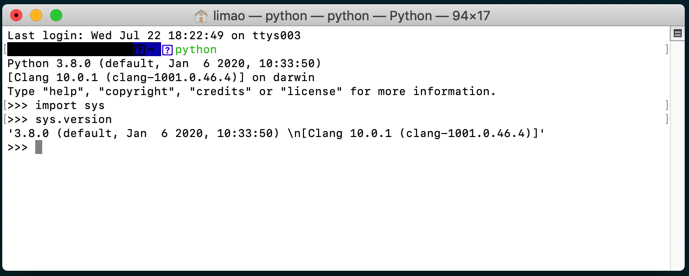
- Mac
- 直接在终端中运行python，即可进入
IDLE- Mac
- 通过点击或运行IDLE才能启动
- 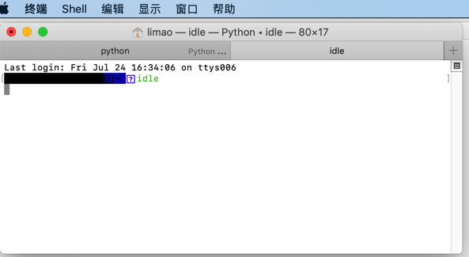
- ->

- 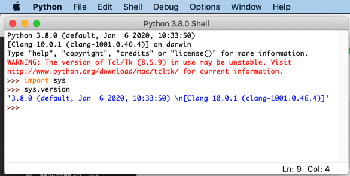
- 通过点击或运行IDLE才能启动
- Mac
- 先说版本：
什么是系统的终端
- 系统的终端：
- 针对不同系统
- Windows中，默认的是cmd=命令行=命令提示符
- 长这样
- 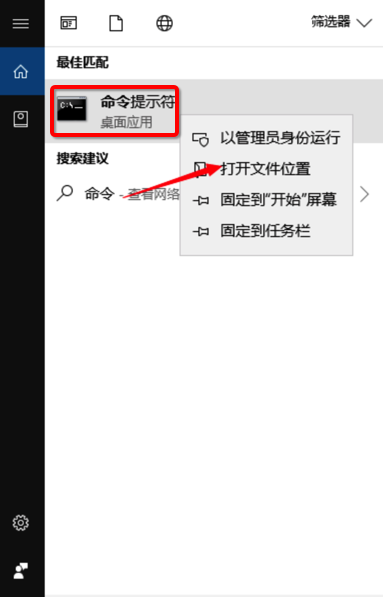
- 英文版
- 对应cmd.exe这个文件：
- 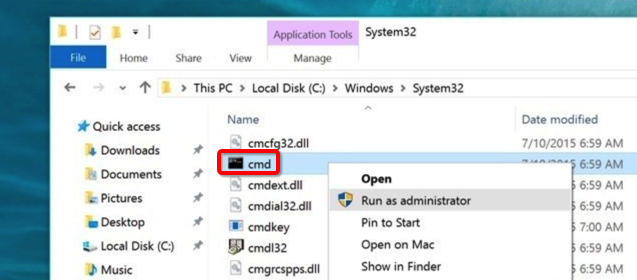
- 文件属性：
- 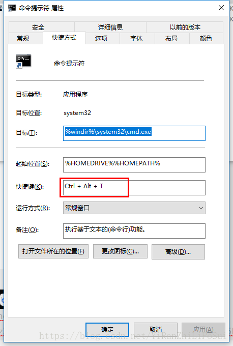
- 如何启动=运行：
- 2种方式
- 点击上述 命令提示符
Wind+R-> 输入cmd-> 回车
- 2种方式
- 启动=运行后长这样
- 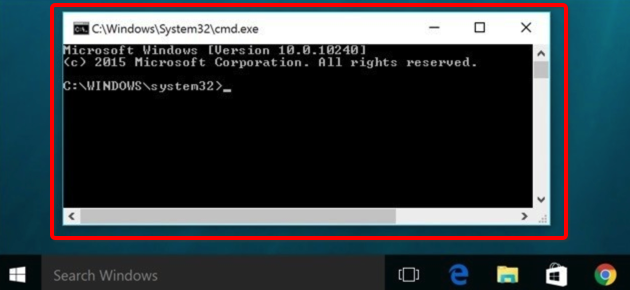
- 长这样
- Mac中的Terminal
- 长这样
- 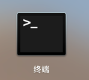
- 启动=运行后长这样
- 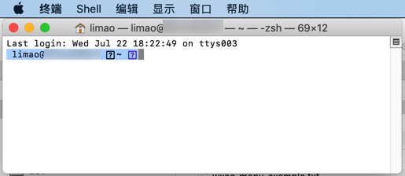
- 长这样
- Linux中的shell
- 各种发行版
- Ubuntu
- 启动后，长这样：
- 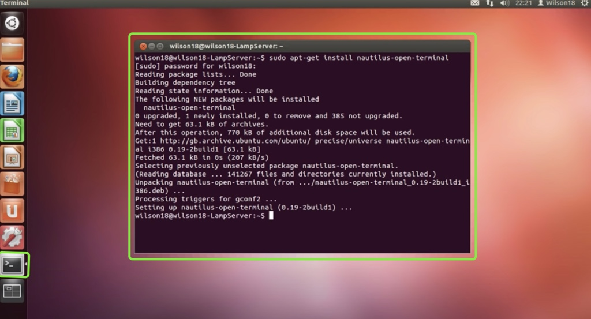
- 启动后，长这样：
- Ubuntu
- 各种发行版
- Windows中，默认的是cmd=命令行=命令提示符
- 针对不同系统
引申：编辑器和IDE的终端往往就是系统的终端
对应的，很多编辑器和IDE，比如VSCode、PyCharm等，其中的终端往往是用的就是系统的终端。
举例：
- VSCode中的终端
- PyCharm中的终端
- PyCharm中的Terminal（往往）是系统的终端
- 往往就是系统自带的终端，即win的cmd或Mac的Terminal等
- PyCharm中的Terminal（往往）是系统的终端
引申：在系统终端中启动Python shell
所以一种常见的启动Python shell的方式就是，在系统终端中输入python，就可以方便的启动python shell：

然后继续在python shell中写（一般是小段的）代码，去测试代码逻辑是否运行正常。
Python的shell对比系统的终端
关于：
- Python的shell
- 系统的终端
先贴出截图对比说明：
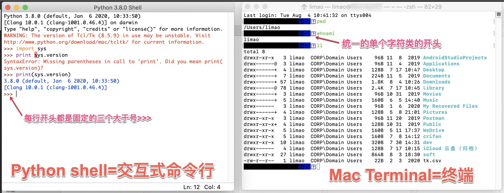
再详细解释：
Python的shell，是Python给你提供了一个环境，可以用来执行，运行（你所输入的）Python代码的环境- 即：其底层已经有个Python的解释器在运行
- 因此才能实现，你输入了Python代码，回车后，就可以运行代码，看到运行后的结果了
- 长什么样：每一行的开头往往是 三个大于号
>>>
- 即：其底层已经有个Python的解释器在运行
- （
Win/Mac/Linux等）系统的终端，只支持系统的命令，而无法直接支持，直接能运行你所输入的Python代码- 长什么样：每一行的开头，往往是 单个字符或符号：井号
#/ 大于号> - 所以如果输入系统不存的命令：
- 举例
x=get_data()- 就会报错：
'x' 不是内部或外部命令，也不是可运行的程序或批处理文件- 而这种错误，其实对于初学者也很常见
- 就是因为连基本的系统终端和系统支持的命令等基础概念都不清楚，所以常会犯此初级错误
- 而这种错误，其实对于初学者也很常见
- 举例
- 那哪些才是系统支持的命令呢？
- 比如
Win中的dir：列出当前目录中的内容cd xxx：切换到xxx目录- 等等
Mac/Linux等 中的ls：列出当前目录中的内容pwd：显示当前目录所在路径- 等等
- 比如
- 长什么样：每一行的开头，往往是 单个字符或符号：井号